Un écran radar, une salve de contacts, une seule règle : identifier avant de tirer. Détruisez les menaces rouges, épargnez les alliés jaunes, et gérez un arsenal qui se régénère au fil des niveaux — dans un navigateur, sans rien installer.
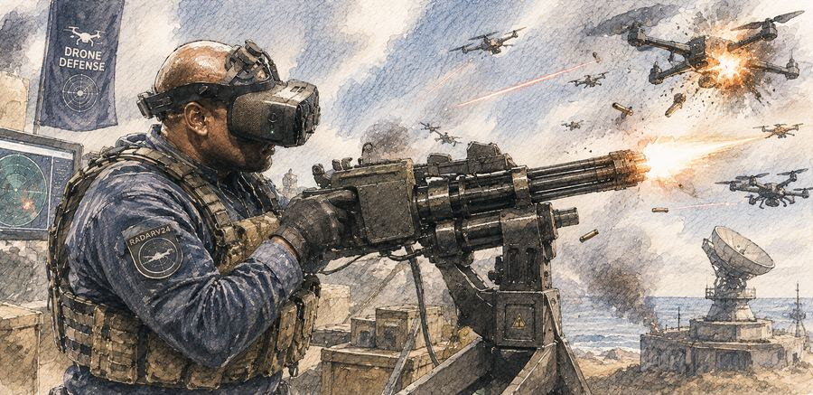
Les contacts apparaissent en vert et convergent vers le centre du radar. Au plus tard au deuxième cercle, chacun révèle son identité : une menace à abattre, ou un allié à laisser passer.
Tirer sur un allié coûte une demi-vie. Laisser une menace atteindre le centre coûte une vie entière. Le nombre et la vitesse des contacts augmentent à chaque niveau, et un arsenal de sept armes se débloque progressivement pour faire face à la cadence.
Vos records — meilleur score, meilleur niveau, précision de tir, arme la plus efficace — sont conservés automatiquement, et la partie en cours survit même à un F5.
Quelques séquences générées pour donner le ton : ambiance, tirs, et arsenal en plein essai.
Défense au casque VR, mitrailleuse rotative contre une vague de drones.
Un défenseur au fusil RADAR V24 tient la ligne face à l'essaim.
Le mécha IA balaie le ciel au minigun, sans intervention humaine.
Position de falaise : le mécha encaisse et riposte au bord de l'écran radar.
Tir au fusil d'assaut à quelques mètres du poste radar.
Chaque arme se recharge à sa propre fréquence et s'accumule en stock jusqu'à utilisation — une par type et par niveau, sauf en mode entraînement où tout est illimité.
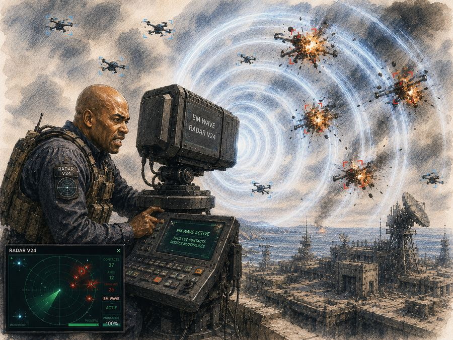
Une onde circulaire visible qui ne détruit que les contacts rouges sur son passage.
tous les 5 niveaux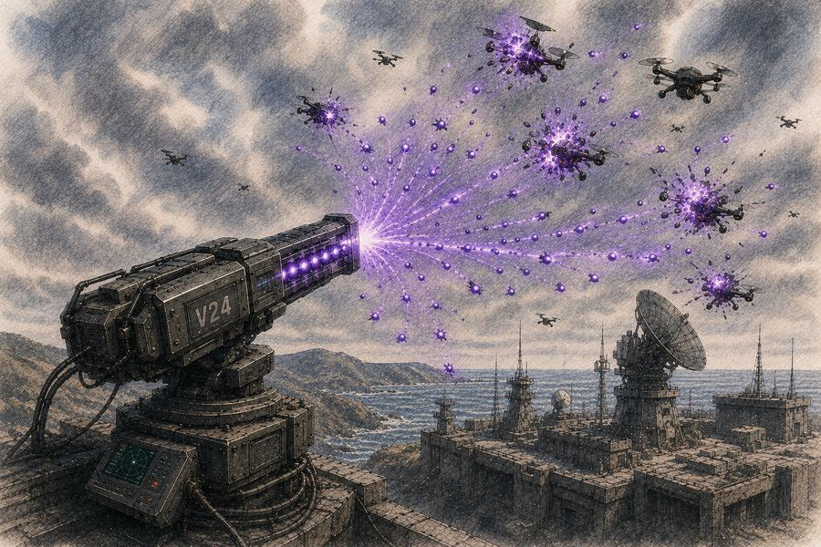
Quatre tirs cardinaux qui se multiplient en cascade à chaque franchissement de cercle.
tous les 3 niveaux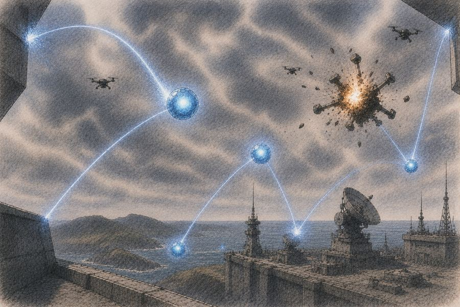
Rebondit sur les bords, se dédouble à chaque cercle franchi, explose au contact d'un rouge.
tous les 4 niveaux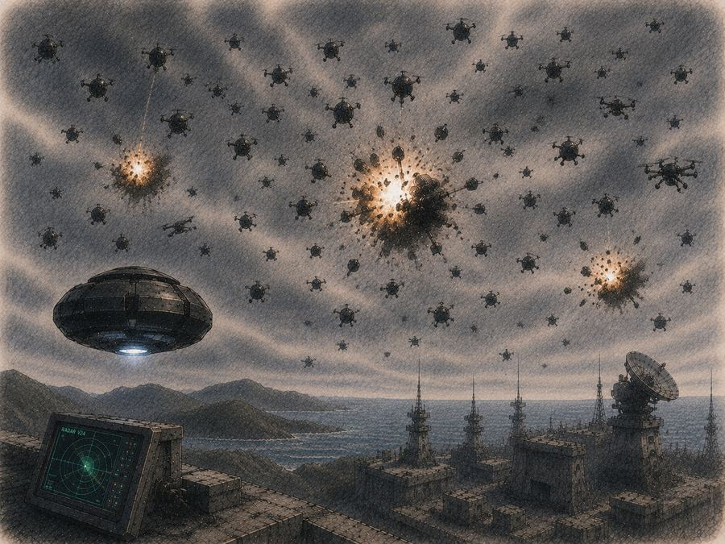
Triple au premier franchissement de chaque cercle et rebondit sur tout contact non hostile.
tous les 7 niveaux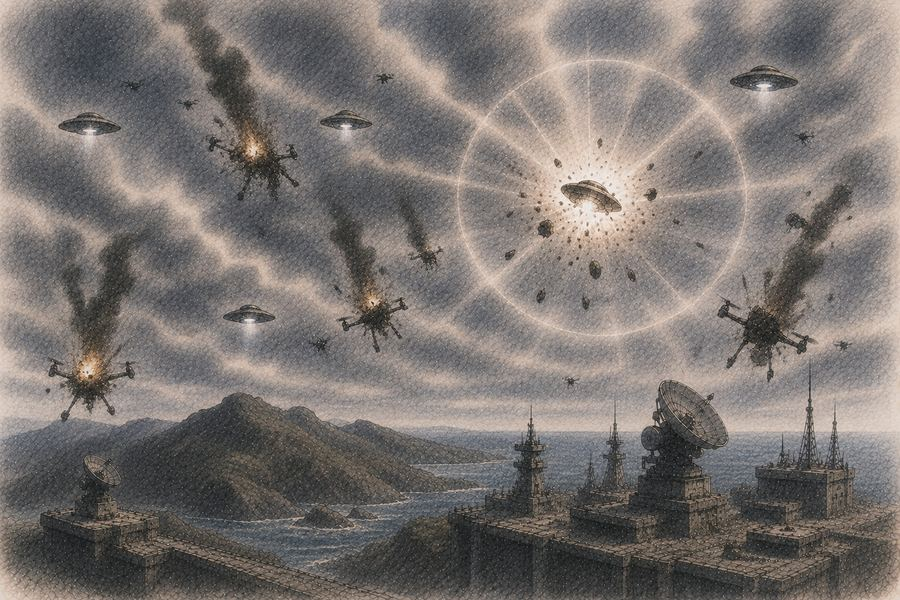
Au contact d'un rouge, déclenche une onde de choc qui détruit toutes les menaces sur son rayon.
tous les 8 niveaux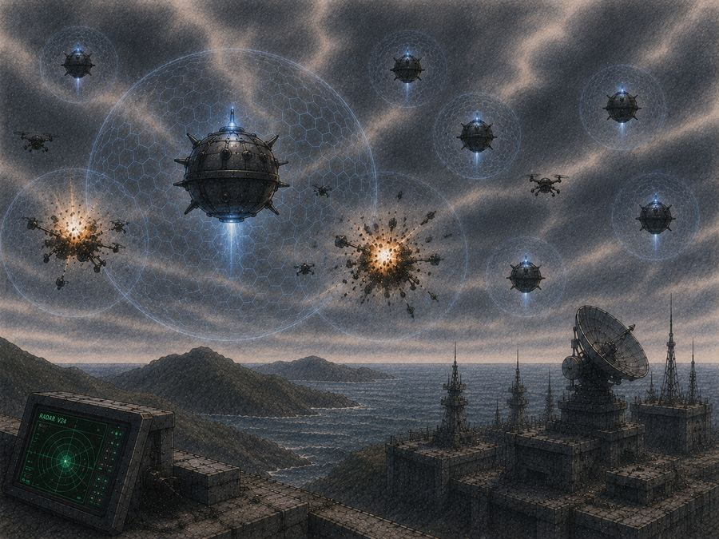
20 mines patrouillent sur 4 anneaux concentriques et chargent dès qu'une menace entre dans leur zone.
tous les 5 niveaux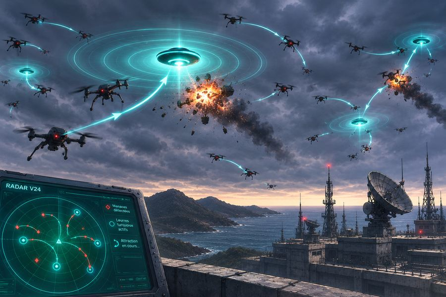
Huit leurres attirent magnétiquement les rouges ; contact = destruction mutuelle.
tous les 4 niveaux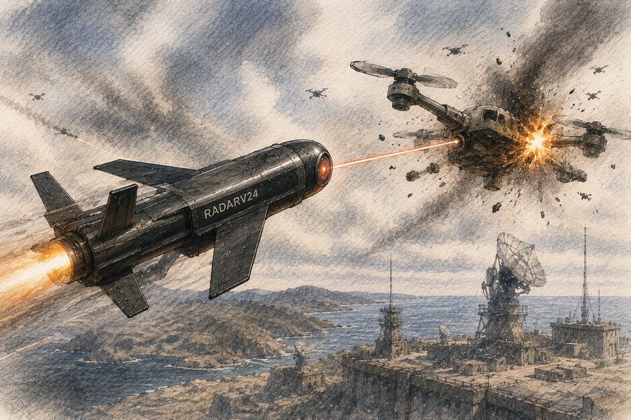
La progression classique : niveaux croissants, arsenal qui se débloque au rythme prévu, records enregistrés.
Toutes les armes en quantité illimitée, aucune limite d'usage par niveau. Idéal pour apprendre chaque mécanique librement.
Choisissez, pour chacune des cinq armes principales, leur niveau de première apparition et leur fréquence de régénération.
La V24 introduit trois façons de défendre le même écran radar — et permet de comparer, chiffres à l'appui, ce que chacune donne.
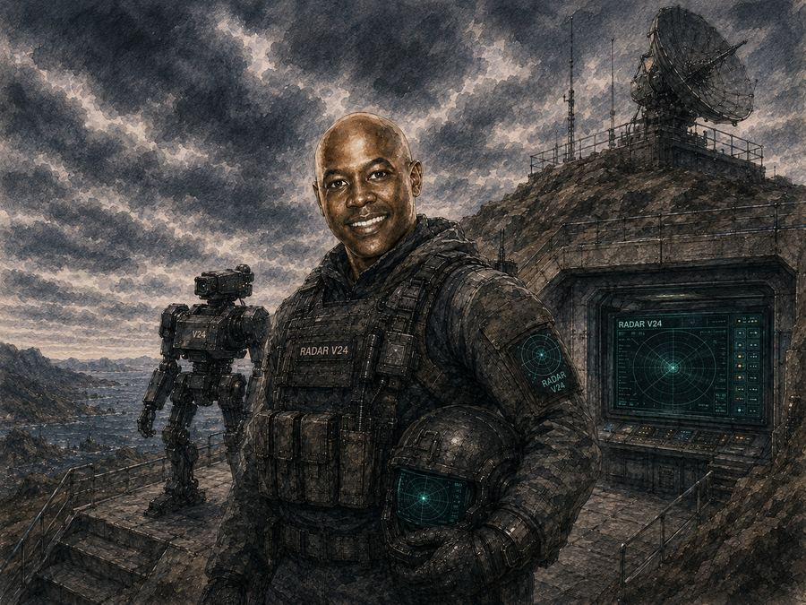
L'humain gère toute la défense : identification, tir, gestion de l'arsenal.
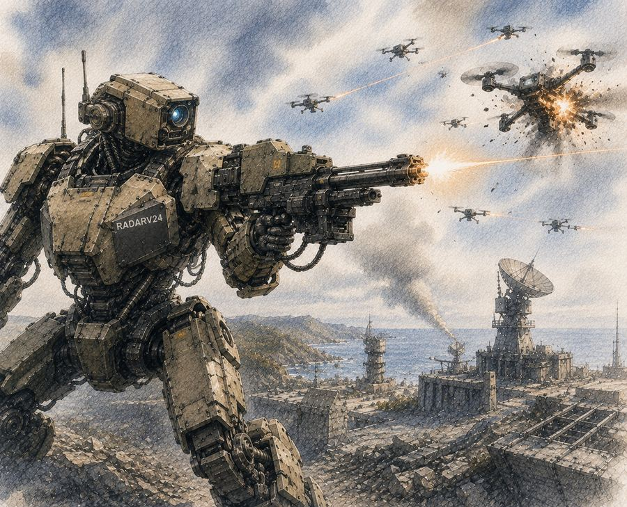
L'IA analyse les menaces et utilise elle-même l'arsenal, sans intervention humaine.
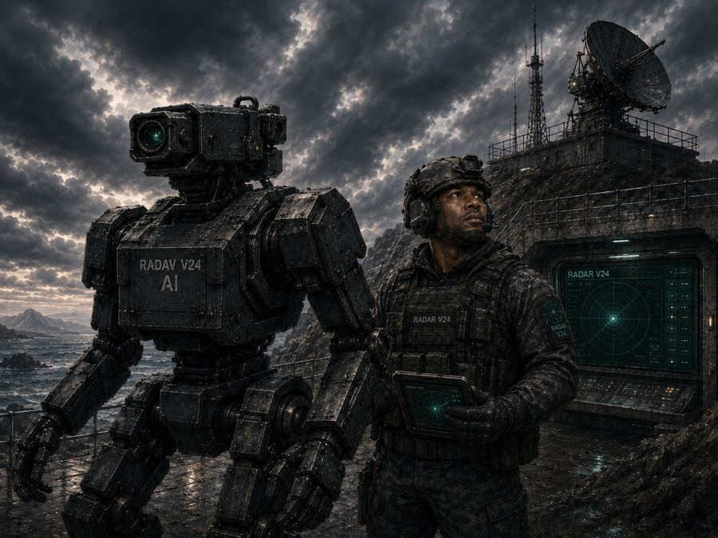
L'humain et l'IA défendent ensemble, et peuvent tous les deux actionner les armes.
Programmer une IA capable de défendre l'écran, seule ou aux côtés d'un joueur, amène naturellement à un parallèle avec les systèmes de défense réels. En cybersécurité comme dans le domaine militaire, l'IA a un avantage considérable : elle surveille en continu, analyse en une fraction de seconde, et réagit presque instantanément — là où l'humain doit d'abord percevoir, comprendre, puis décider.
C'est cette question qu'un petit jeu de radar aura fini par poser.
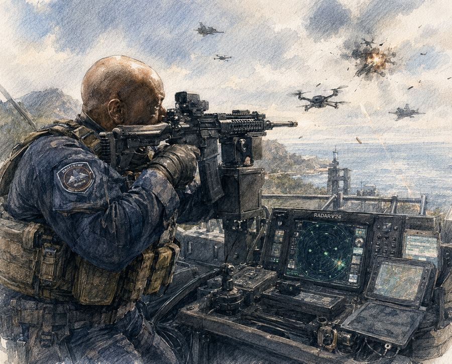
Passionné de nouvelles technologies et de cybersécurité, formateur en gouvernance, audit et cybersécurité au niveau Master/MBA, et développeur indépendant sous la bannière Twagirumukiza Studio. RADAR est né de cette double vie : concevoir de petits systèmes de défense pour le plaisir, et enseigner comment on pense les vrais, sérieusement. Profil LinkedIn ↗
Applications de bureau autonomes pour macOS et Windows — même moteur de jeu, sans navigateur requis.
Pas envie d'installer quoi que ce soit ? Le jeu tourne aussi entièrement dans le navigateur.
▶ Jouer en ligne